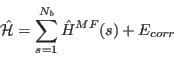
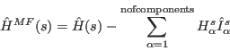
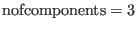
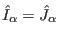
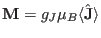
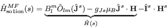
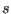
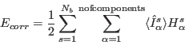
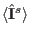

Next: Example mcphas.ini file for Up: Input Files Previous: Example - a simple Contents Index
mcphas.ini consists of several sections:
For example a good starting point is to begin with a calculation with large step widths (e.g. 0.1) covering the Brillouin zone. This should give an idea of the propagation vectors which are stabilised. An advanced calculation could then fine tune the propagation and determine its accurate value (using small step widths in a limited area of the zone). The verbose option of mcphas allows to inspect the propagation vectors which are actually used in the calculation. Trick: in order to get a quick overview of the q-vector range covered by the mcphas simulation start mcphas, exit and just type felog ./results/mcphas.qvc (need perl,perldl,pdl,pgplot packages).
In order to limit calculation time, the maximum periodicity of the magnetic unit cell with respect to the crystallographic unit cell (maxqperiod) and the maximum number of spins in the magnetic unit cell (maxnofspins) can be limited. Also the maximum number of test spin configurations in the internal table can be limited (maxnoftestspincf). A critical feature with respect to calculation time is also the number of spin configurations which are generated by a random process from a tabulated SPINCONFIGURATIONS during the calculation.
In summary the variables in this section are mainly important to adapt the program to a given computer system with finite speed. They have to be set to optimise between speed and accuracy of the calculation. In order to find appropriate values it is best to perform some calculations and restrict the parameters step by step if insufficient speed is obtained. Also the examples included in the program package may serve as starting points.
|  | (13) |
with the single ion Hamiltonian
|  | (14) |
In case of module so1ion in it's simplest application with  interaction operators only, the interaction operators are defined to be equal to the total angular momentum, i.e.  (with the magnetic moment  ) and the single ion Hamiltonian is given by
|  | (15) |
Note, here denotes the exchange field at the site  and  denotes the applied
magnetic field.
denotes the applied
magnetic field.
The correction term is defined by
|  | (16) |
and the components exchange fields are given by
The exchange fields and the moments  are determined in a self consistent way. For a given magnetic unit cell and initial configuration of moments the exchange fields are calculated according to equation (17). Then, for each magnetic ion the single ion property module is taken and the moment is calculated from it's mean field. The mean fields are used again in equation (17) and so on .... until convergence is reached. Then, the free energy per site
of the stabilised configuration is calculated (this is why this sub is called fecalc). The free energies of a lot of different stabilised configurations have to be compared in order to find out which configuration has lowest free energy, i.e. is stable in thermal equilibrium.
It may happen that this process does not converge due to bad choice of the initial configuration, therefore a maximum number of mean field loops has to be given by the user. The results of a calculation may be significantly influenced by changing parameters such as the maximum number of iteration loops in this section. In fact the simulation is always a compromise of calculation time and accuracy: if only a few initial spin configurations are tried at each (H-T) point, the calculation speed is fast, however it is possible that the program misses the magnetic structure with the lowest free energy. The same holds if other critical parameters of the simulation are restricted too much.